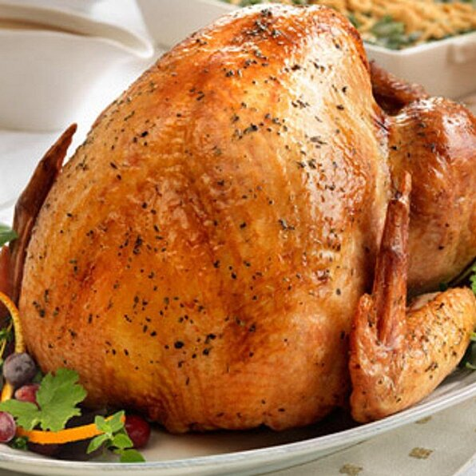

Herb Roasted Turkey

Description
Thanksgiving is just around the corner. What better way to celebrate than
by enjoying a nice roasted turkey. It's a classic you can never go wrong
with. You're family members are going to want to celebrate at your house
every year with this recipe. Wait... You might not want to try this recipe
in that case! Well, we'll leave that for you to decide.
Anyways, we hope you enjoy this recipe. It's a nicely oven roasted turkey
with herbal tones and aromas that will leave your mouth watering.
Ingredients
- 1 (12 pound) turkey
- 1 tablespoon olive oil
- 1/4 teaspoon kosher salt and freshly ground black pepper
- 1 (26 ounce) carton Swanson® Chicken Stock (Regular or Unsalted)
- 3 tablespoons lemon juice
- 1 teaspoon dried basil leaves, crushed
- 1 teaspoon dried thyme leaves, crushed
- 1/4 cp all-purpose flower
Steps
-
Remove the package of giblets and neck from the turkey cavity. Rinse
the turkey with cold water and pat dry with a paper towel. Tie the ends
of the drumsticks together.
-
Place the turkey, breast-side up, on a rack in a roasting pan. Brush
the turkey with the oil. Season with the salt and black pepper. Insert
a meat thermometer into the thickest part of the meat, not touching the
bone.
-
Stir the stock, lemon juice, basil, thyme and 1/8 teaspoon additional
black pepper in a large bowl. Reserve 1 3/4 cups stock mixture for the
gravy. Pour the remaining stock mixture over the turkey.
-
Roast at 325 degrees F for 3 hours or until the thermometer reads 165
degrees F., basting occasionally with the pan drippings. Begin checking
for doneness after 2 1/2 hours of the roasting time.
-
Remove the turkey from the pan, cover and keep warm. Spoon off any fat
and pour off all but 1 1/2 cups pan drippings.
-
Stir the reserved stock mixture and the flour in a medium bowl until
the mixture is smooth. Add the flour mixture to the pan. Cook and stir
over medium heat until the mixture boils and thickens, scraping up the
browned bits from the bottom of the pan. Season, if desired.
Serve the gravy with the turkey.
Nutrition Facts
Per Serving: 697 calories; protein 92g;
carbohydrates 2.7g; fat 32.5g; cholesterol 264.5 mg; sodium 390mg.